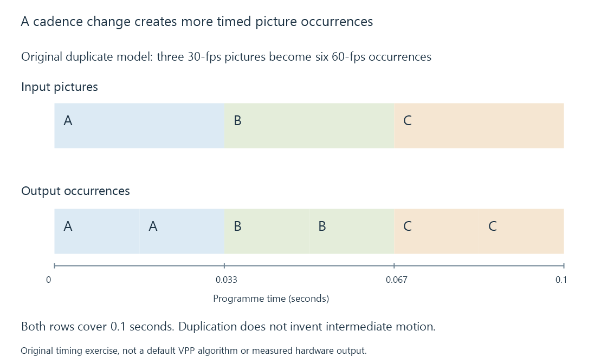

Intel video processing (VPP)
Intel VPP processes decoded pictures into a requested output picture configuration, coordinating supported transformations, output cadence and surface completion.
VPP is Intel's video-processing stage: it accepts pictures and produces pictures with a requested configuration. It sits between reconstruction and compression in a typical decode-process-encode route.
Scaling, format conversion and other supported transformations belong here. The following encoder creates the compressed output.
Query an input/output relationship
A processor needs more than a list of filter names. Its configuration describes input and output picture size, storage format, cadence and the selected processing operations.
For an original scaling exercise, a 1920 × 1080 input becomes 1280 × 720. The width and height ratios are both two-thirds, while picture area becomes four-ninths:
1280 / 1920 = 720 / 1080 = 2/3
(1280 × 720) / (1920 × 1080) = 4/9
A compatible input surface must also be available in the accepted memory/context arrangement. Whether a particular combined operation is exposed is a runtime/device query.
In an Emby route, a QSV decoder, VPP stage and QSV encoder can describe three cooperating operations. A CPU filter inserted between them changes their picture handoffs.
Output cadence can change the number of pictures
Use an original duplicate-cadence model that turns three progressive input pictures at 30 fps into six output pictures at 60 fps over the same 0.1-second interval.
| Input picture | Input presentation time | Two output presentation times |
|---|---|---|
| A | 0 | 0 and 1/60 s |
| B | 1/30 s | 2/60 and 3/60 s |
| C | 2/30 s | 4/60 and 5/60 s |

The pictures are duplicated in this model. It does not claim interpolation or an Intel default. The output encoder receives six picture occurrences and their sixty-fps timeline, while the represented interval remains 0.1 seconds.
Other operations, including deinterlacing, can have different input/output relationships. Frame-rate conversion describes the presentation consequences separately.
The output loop must honor the result
Intel's public VPP procedure describes asynchronous processing and return values that inform the next operation:
| Result | Relevant meaning in the documented processing loop |
|---|---|
| MFX_ERR_NONE | Successful step; follow its output and completion contract |
| MFX_ERR_MORE_SURFACE | Additional output-surface handling is needed for the current input relationship |
| MFX_ERR_MORE_DATA | The operation needs further input, or draining has reached its specified end condition |
In the documented asynchronous loop, usable output is synchronized before it is consumed. A successful submission and a completed output surface are separate stages.
A multiple-output transformation can therefore require another output surface while retaining the current input. Advancing the input unconditionally after every call can lose an intended output occurrence.
These status names are API results, not picture-quality categories.
Processing order defines the intended picture
A selected overlay painted before scaling changes size with the picture. An overlay applied after scaling uses the output coordinate system. A colour conversion likewise needs the input's actual range, matrix and transfer interpretation.
Picture storage and colour/timing metadata must stay coherent across the stage. A format conversion changes the representation it was configured to change; it does not infer every desired HDR presentation policy from the VPP name.
See Also
- Intel Quick Sync Video (QSV)
- Intel VPL and the oneVPL name
- The hardware decode-filter-encode pipeline
- Frame-Rate Conversion
- Media filter graphs